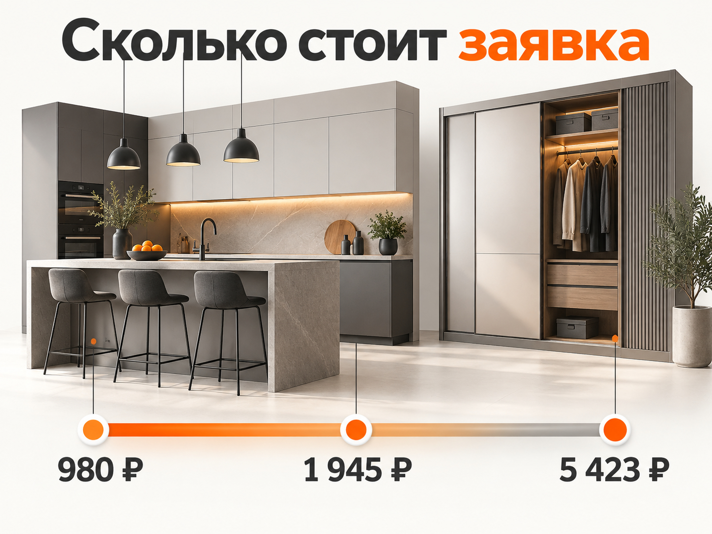
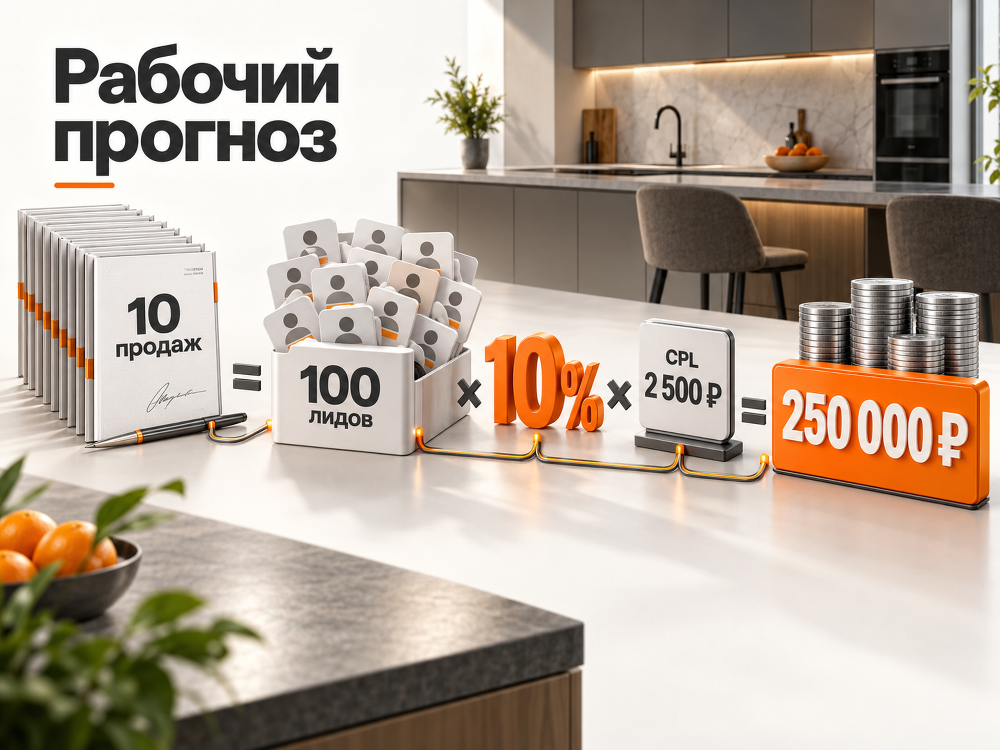

Блог о платном трафике
Продвижение мебели на заказ через Яндекс Директ: инструкция и прогноз
Яндекс Директ подходит для продвижения мебели на заказ, потому что позволяет работать с уже сформированным спросом: человек ищет кухню, шкаф, гардеробную или другую мебель под конкретные размеры и выбирает производителя.
Но продавать здесь нужно не просто «мебель». Первый реальный результат рекламы - расчёт стоимости, консультация или замер. Дальше начинается более длинная воронка:
реклама -> обращение -> квалифицированный лид -> замер или расчёт -> договор -> оплата.
Поэтому заявку за 1 000 ₽ нельзя автоматически считать хорошим результатом, а заявку за 4 000 ₽ - плохим. Нужно понимать, сколько обращений действительно подходят бизнесу и сколько из них превращается в заказы.
Свежие открытые кейсы 2026 года показывают очень большой разброс. В одном проекте по кухням цена заявки после оптимизации снизилась до 920-1 040 ₽, в другом московском проекте по корпусной мебели CPL составил около 1 945 ₽, а в кейсе производителя кухонь в Москве и области пересчитанная стоимость обращения составила уже около 5 423 ₽.
Поэтому для первого прогноза я бы использовал не одну «среднюю цену лида», а диапазон и обязательно считал допустимую стоимость клиента от экономики конкретного производства.
Что именно продвигать в мебели на заказ
Одна из главных ошибок - запускать рекламу на общую страницу «Мебель на заказ» и смешивать внутри одной логики совершенно разные продукты.
Покупатель кухни, встроенного шкафа и гардеробной решает разные задачи. Отличаются чек, аргументы при выборе, поисковые запросы, фотографии, сроки изготовления и конкуренты.
Если производство работает сразу с несколькими направлениями, я бы разделял как минимум:
- кухни на заказ;
- шкафы и встроенные шкафы;
- гардеробные;
- мебель для прихожих;
- мебель для детских;
- мебель для ванной;
- нестандартную мебель по размерам.
Не обязательно создавать отдельную рекламную кампанию на каждый небольшой подвид. Избыточное дробление мешает алгоритмам собирать статистику. Но основные продуктовые направления должны хотя бы разделяться на группы и вести человека на релевантный раздел сайта.
Свежий срез Вордстата за конец августа 2026 года хорошо показывает дробность спроса: только запрос «мебель на заказ по размерам» давал 6 178 показов в месяц по России, «стеллаж на заказ» - 2 319, при этом существуют намного более узкие запросы вроде мебели для мансарды или шкафа под скошенный потолок.
Для Директа это важно: низкочастотный запрос иногда ценнее общего высокочастотного, потому что человек уже сформулировал конкретную проблему, которую стандартная мебель не решает.
Как выглядит спрос в Яндекс Директе
Я бы разделил поисковый спрос на несколько слоёв.
Первый - прямой коммерческий спрос:
- мебель на заказ;
- корпусная мебель на заказ;
- изготовление мебели на заказ;
- мебель по индивидуальным размерам;
- заказать мебель по размерам.
Второй - конкретный продукт:
- кухня на заказ;
- шкаф на заказ;
- встроенный шкаф на заказ;
- гардеробная на заказ;
- прихожая на заказ.
Третий - задача или особенность помещения:
- шкаф в нишу на заказ;
- шкаф до потолка;
- мебель под лестницу;
- мебель для мансарды;
- кухня для маленькой квартиры;
- шкаф по индивидуальным размерам.
Четвёртый - запросы по материалам, стилям и конструкции, если производство действительно с ними работает.
Именно такую семантику я бы тестировал после основного коммерческого ядра.
При этом постоянно нужно смотреть реальные поисковые запросы. В нише мебели легко платить за людей, которые ищут готовую мебель, ремонт, фурнитуру, чертежи, самостоятельное изготовление, вакансии или просто фотографии для вдохновения.
Что исключать из поискового трафика

Универсального списка минус-слов быть не может, но особенно внимательно я бы проверял запросы со словами:
- своими руками;
- чертеж;
- скачать;
- б/у;
- ремонт;
- сборка;
- фурнитура;
- работа;
- вакансия;
- обучение;
- бесплатно.
Слова «дёшево» и «недорого» нельзя автоматически минусовать всем производителям. Если компания действительно работает в доступном сегменте, такой спрос может быть целевым. Если средний заказ начинается, например, с нескольких сотен тысяч рублей, эти запросы уже могут приводить аудиторию с неподходящим бюджетом.
Это хороший пример того, почему семантика должна учитывать не просто продукт, а ценовой сегмент.
Сайт важен не меньше настройки Директа
Для мебели на заказ я бы обязательно разместил на сайте:
- реальные фотографии выполненных проектов;
- примеры мебели именно того типа, который рекламируется;
- ориентиры по стоимости;
- объяснение, от чего зависит цена;
- сроки изготовления;
- используемые материалы и фурнитуру;
- фотографии производства;
- отзывы;
- гарантии;
- этапы от замера до монтажа;
- возможность отправить размеры, план или фотографию помещения.
Человеку желательно дать понятное следующее действие.
Вместо абстрактного «Оставить заявку» лучше:
«Рассчитать стоимость»
«Получить предварительный расчёт»
«Вызвать замерщика»
«Отправить размеры и получить расчёт»
Для мебели это логичнее, потому что покупатель редко готов сразу «заказывать». Сначала ему нужно понять хотя бы примерную стоимость и увидеть, способен ли производитель решить его задачу.
Стоит ли делать квиз-калькулятор
Да, но только если он действительно помогает получить предварительный расчёт.
Квиз из восьми-десяти вопросов ради получения телефона способен только увеличить барьер.
Я бы спрашивал минимум данных:
1. Что нужно изготовить.
2. Примерные размеры или возможность приложить фото.
3. Желаемый материал или ценовой сегмент, если это необходимо.
4. Контакт для получения расчёта.
Если точную цену без замера определить невозможно, это лучше честно объяснить.
Основная цель калькулятора - не создать иллюзию точной цены, а перевести человека из режима «смотрю варианты» в следующий этап воронки.
Как я бы запускал Яндекс Директ для мебели на заказ
1. Поиск
Начал бы с наиболее сформированного коммерческого спроса.
Для каждой крупной категории нужны свои объявления и посадочная страница:
«Кухни на заказ» -> страница кухонь.
«Встроенный шкаф на заказ» -> страница встроенных шкафов.
«Гардеробная по размерам» -> страница гардеробных.
Чем точнее совпадают запрос, объявление, фотографии и содержание страницы, тем проще человеку понять, что компания занимается именно его задачей.
2. РСЯ
РСЯ для мебели имеет смысл тестировать отдельно от Поиска.
Здесь особенно важны изображения. Я бы использовал реальные объекты:
- готовую кухню в интерьере;
- встроенный шкаф;
- необычное решение для сложной ниши;
- гардеробную;
- детали материалов и фурнитуры.
Стоковая красивая кухня может давать клики, но плохо подтверждает, что именно эта компания способна изготовить такой объект.
По аудиториям можно тестировать интерес к ремонту, интерьеру, обустройству жилья и близкие сценарии. Но я бы не делал вывод о качестве только по CPL. РСЯ может приводить более дешёвые формы и одновременно хуже конвертироваться в замеры.
3. Ретаргетинг
Для этой ниши ретаргетинг особенно логичен.
Клиент редко выбирает производителя мебели после одного визита. Он открывает несколько сайтов, смотрит портфолио, сравнивает материалы и цены.
Можно отдельно возвращать пользователей, которые:
- посмотрели несколько проектов;
- открыли страницу цен;
- начали расчёт;
- посетили контакты;
- провели достаточно времени на сайте;
- начали заполнять форму, но не отправили её.
В свежем кейсе кухонь за февраль-июнь 2026 года именно ретаргетинг показывал самую низкую цену конверсии - 720 ₽. Поиск по запросам «кухни на заказ» давал 940 ₽, поиск по стилям - 1 080 ₽, РСЯ - 1 220 ₽. Это результат одного проекта, а не норматив рынка, но он хорошо показывает роль повторного контакта в длинной воронке.
4. Мастер кампаний
Мастер кампаний я бы не списывал со счетов и не рассматривал только как упрощённый инструмент для новичков.
В свежем московском кейсе производителя кухонь классический поиск по коммерческим запросам приносил обращения, но хуже проходил до последующих этапов воронки. Основным драйвером масштабирования стала товарная Мастер-кампания на основе фида. За 2,5 месяца проект получил 98 обращений при расходе 531 433 ₽.
Это не означает, что Мастер автоматически лучше Поиска для мебели. Это означает, что его стоит проверять как отдельную гипотезу, а решение принимать по замерам и продажам.
5. Яндекс Карты
Если есть салон, шоурум или точка, куда можно приехать посмотреть образцы, отдельно имеет смысл тестировать продвижение в Картах.
Для небольшого производства без места приёма клиентов этот инструмент уже не является обязательным.
Какие цифры встречаются в свежих кейсах
Единой средней стоимости заявки на мебель на заказ нет.
Вот несколько открытых примеров.
В кейсе кухонь на заказ за февраль-июнь 2026 года после периода обучения средний CPA за май-июнь составил 980 ₽. Конверсия из клика в заявку на замер - 5,2%. На старте в феврале заявка стоила 2 640 ₽.
В московском проекте по кухням, шкафам и корпусной мебели рекламный расход составил 354 000 ₽ за два месяца, получено 182 заявки и 19 клиентов. Если пересчитать опубликованные данные:
CPL = 354 000 / 182 = около 1 945 ₽.
Конверсия лида в клиента = 19 / 182 = около 10,4%.
Стоимость клиента = 354 000 / 19 = около 18 632 ₽.
В другом московском кейсе 2026 года производитель кухонь потратил 531 433 ₽ и получил 98 обращений. Расчётный CPL составляет:
531 433 / 98 = около 5 423 ₽.
При этом авторы кейса оценивали рекламу уже по замерам и оплатам, а не пытались получить минимальный CPL.
Получается диапазон примерно от 1 000 до 5 400 ₽ даже среди опубликованных успешных проектов.
Именно поэтому фраза «нормальная заявка на мебель стоит 1 500 ₽» мало полезна без региона, сегмента и определения самой заявки.
Какой CPL я бы заложил в первоначальный прогноз
Если нет собственной статистики и даже не указан регион, для первого расчёта я бы использовал широкий рабочий коридор:
первичный лид - примерно 1 500-4 000 ₽.
Для Москвы, дорогого сегмента, сложного изделия или слабой посадочной я бы обязательно проверял экономику и при CPL 4 000-6 000 ₽ и выше.
Это именно прогнозный диапазон для медиаплана, а не «средняя цена заявки по рынку».
После первых недель работы его нужно заменить фактическими данными конкретного проекта.
Главное - считать квалифицированный лид
В мебели особенно опасно оптимизироваться на дешёвую форму.
Допустим, две кампании дают такой результат:
Кампания А:
100 заявок по 1 500 ₽.
Только 30 подходят по бюджету, географии и задаче.
Стоимость квалифицированного лида:
150 000 / 30 = 5 000 ₽.
Кампания Б:
60 заявок по 2 500 ₽.
Подходят 45.
Стоимость квалифицированного лида:
150 000 / 45 = 3 333 ₽.
По обычному CPL первая реклама в 1,7 раза дешевле.
По стоимости нормального потенциального клиента выигрывает вторая.
Поэтому я бы передавал в Метрику данные из CRM и отдельно фиксировал как минимум:
заявка -> квалифицированный лид -> замер -> договор -> оплата.
На какую цель оптимизировать рекламу
Не нужно автоматически выбирать самую глубокую цель.
Если производство получает пять договоров в месяц, оптимизировать отдельную кампанию только на договор может быть слишком рано.
Поэтому логика такая:
если заявок много, но договоров мало - можно использовать квалифицированный лид или замер;
если квалифицированных лидов тоже мало - использовать более частую цель;
когда накопится достаточно глубоких конверсий - тестировать оптимизацию ближе к продаже.
Главное - не обучать рекламу на лёгких действиях вроде просмотра контактов только потому, что таких событий много.
Прогноз бюджета на мебель на заказ
Бюджет лучше считать назад от требуемого количества договоров.
Формулы:
Нужные лиды = план продаж / конверсия лида в продажу
Рекламный бюджет = нужные лиды × CPL
Допустимый CPL = допустимая стоимость клиента × конверсия лида в продажу
Покажу три сценария для условной задачи - получить 10 новых клиентов в месяц.
Сильный сценарий
CPL - 1 500 ₽.
Конверсия лида в продажу - 15%.
10 / 0,15 = примерно 67 лидов.
67 × 1 500 = примерно 100 500 ₽ рекламного бюджета.
Стоимость клиента - около 10 000 ₽.
Рабочий сценарий
CPL - 2 500 ₽.
Конверсия лида в продажу - 10%.
Нужно 100 лидов.
100 × 2 500 = 250 000 ₽.
Стоимость клиента - 25 000 ₽.
Осторожный сценарий
CPL - 4 500 ₽.
Конверсия лида в продажу - 8%.
10 / 0,08 = 125 лидов.
125 × 4 500 = 562 500 ₽.
Стоимость клиента - 56 250 ₽.
Разница огромная: одинаковые десять продаж могут потребовать от примерно 100 000 до 560 000 ₽ рекламного бюджета.
И это нормально для предварительного прогноза, когда неизвестны регион, средний чек, ассортимент, конверсия сайта и качество отдела продаж.
Как понять допустимую стоимость заявки
Допустимый CPL нужно считать от допустимой стоимости клиента.
Предположим, бизнес готов платить за один новый договор максимум 30 000 ₽.
Из десяти лидов в продажу превращается один.
Конверсия - 10%.
Тогда:
30 000 × 10% = 3 000 ₽.
Значит, допустимый CPL составляет примерно 3 000 ₽.
Если реклама приводит заявки по 2 000 ₽, запас есть.
Если по 5 000 ₽, экономика при текущей конверсии уже не сходится.
Дальше есть три варианта:
- снизить стоимость привлечения;
- повысить конверсию из лида в продажу;
- увеличить допустимый CAC за счёт более высокой маржи или среднего чека.
Просто требовать от директолога «сделать лиды дешевле» недостаточно.
Что сильнее всего влияет на результат
Для мебели на заказ я бы в первую очередь следил за шестью вещами.
Сегментация. Не смешивать кухню, шкаф и гардеробную в одно общее предложение.
Цена и позиционирование. Если реальная кухня стоит 400 000 ₽, реклама с обещанием «от 50 000 ₽» способна дать много дешёвых, но бесполезных обращений.
Портфолио. Человек покупает не ЛДСП и фурнитуру, а результат в своей квартире.
Скорость обработки. Покупатели часто отправляют заявки сразу нескольким производителям, поэтому скорость первого контакта влияет на дальнейшую воронку.
Квалификация. Нужно понимать, почему лид не подходит: бюджет, регион, сроки, тип мебели или что-то другое.
Аналитика до продажи. Без неё кампания с дешёвыми заявками может получить весь бюджет, хотя другая кампания приносит реальных клиентов.
Пошаговый план запуска
Я бы запускал продвижение мебели на заказ в такой последовательности:
1. Разделить ассортимент на основные направления.
2. Определить ценовой сегмент каждого направления.
3. Собрать коммерческий спрос по конкретному региону через Вордстат.
4. Проверить прогноз стоимости поискового трафика.
5. Подготовить отдельные посадочные под основные категории.
6. Настроить Метрику, формы, звонки и мессенджеры.
7. Сохранять рекламные данные и ClientID в CRM.
8. Запустить горячий Поиск.
9. Отдельно протестировать РСЯ и ретаргетинг.
10. Проверить Мастер кампаний как самостоятельную гипотезу.
11. Размечать квалифицированные и нецелевые заявки.
12. Передавать в Метрику замеры, договоры или другие глубокие статусы.
13. Перераспределять бюджет по стоимости качественного лида и клиента.
14. Масштабировать только направления, экономика которых подтверждается продажами.
Итоговый прогноз
Яндекс Директ для мебели на заказ я бы рассматривал как один из основных платных каналов, особенно для кухонь, шкафов, гардеробных и других изделий, которые человек уже целенаправленно ищет.
Но оптимизировать рекламу только по дешёвой заявке здесь особенно опасно.
В свежих открытых кейсах встречается CPL примерно от 980 ₽ до 5 423 ₽. Разброс объясняется географией, продуктом, способом получения заявки, качеством сайта и самой методикой учёта.
Для первоначального прогноза без собственных данных я бы закладывал 1 500-4 000 ₽ за первичное обращение, а для дорогих регионов и сегментов допускал тестирование более высокой стоимости.
Рабочую модель считал бы не до заявки, а до клиента:
реклама -> лид -> квалифицированный лид -> замер -> договор -> оплата.
При условном CPL 2 500 ₽ и конверсии из лида в клиента 10% для получения 10 дополнительных заказов потребуется около 100 обращений и примерно 250 000 ₽ рекламного бюджета.
Но настоящим ориентиром после запуска должна стать не эта прогнозная цифра, а собственная стоимость квалифицированного лида и оплаченного заказа.
